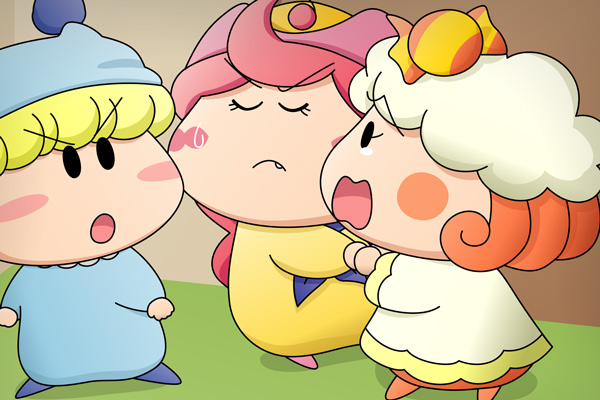

アクミ「アロマ！？」
突然のその言葉にはっ振り返るムルモとクモモ。そこには驚いて青ざめた顔をしているアクミ、その後ろにはミルモとミルモの影に隠れているリルムとパンタが立っていました。ムルモとクモモも驚いてその場で固まることしか出来ず・・・。
リルム「アロマさんが狙われるなんて信じられないですわ・・・」
パンタ「ミルモお兄ちゃん、ボクたん何だかこわいですっち～」
ミルモ「うわぁ、パンタくっつくなっての、オレから離れろっての！」
パンタ「嫌ですっち～。離れたくないですっち～」
アクミ「・・・何でアロマが狙われなきゃならないのさ・・・許せねぇっ！」
ムルモ＆クモモ「・・・・・・」
仲良くなったばかりの友達の悲惨な姿を見て、アクミは誰よりも怒りをあらわにしていました。みんなが言葉を失って立っていると、しばらくして部屋の入口のドアが再び開き、また誰かが部屋へ入ってきました。
ヤマネ「皆様どうかなさいましたでございますか？」
ムルモ「ほえぇっ、ヤマネしゃん！こっちに来ちゃだめでしゅ」
サスケ「何だよムルモ。
オイラたちはムルモに命令される筋合いはないぜ」
ハンゾー「そうなのら。ボクたちに命令できるのは兄貴だけなのら～」
ヤマネ「サスケ先輩、ハンゾー先輩、そんなことは無いで・・・えっ！」
思わず手で口を押さえるヤマネ。
サスケ「あ、アロマ、ど、ど、どうしたんだぜ！？」
ハンゾー「大きなたんこぶなのら～」
大きくうろたえるサスケに対して、ハンゾーはいつものマイペースのままのようです。
＊
クモモ「皆さん聞いて欲しいクモ。
夕食のちょっと前にアロマさんが誰かに殴られてしまったクモ」
一度は事件を隠そうとしたクモモでしたが、あきらめてみんなに分かるように状況を説明しました。
ムルモ「ティーカップが２つあることから、アロマしゃんは犯人と一緒に紅茶を
飲んでいたはずでしゅ」
ミルモ「そう見せかけるために、外部犯が後からティーカップを用意した
ということはないのか？」
ムルモ「それはないでしゅね。
アロマしゃんと犯人のティーカップに残っている紅茶は同じくらい
温かかったでしゅし、犯人は一刻も早く部屋から立ち去りたいのに
わざわざ後から紅茶を用意するのも考えにくいでしゅ」
ヤマネ「やはり犯人はこの中に・・・」
ムルモ「そういうことでしゅ！
犯人はこの中にいて、今もボクたちと一緒に驚いたふりをしているはずでしゅ」
ムルモがそう言うと、みんなは無言になってちらちらと見合いました。
そして・・・。

アクミ「もうこれ以上こんなペンションにいるのはご免だね！」
みんな「！」
突然のアクミの大きな声にみんなはびっくりしました。
アクミ「あたいは今から帰る！
大人たちを呼んでお前たちの中から犯人を見つけ出してやるからな」
ミルモ「おいアクミ、ちょっとは落ち着けよ」
クモモ「アクミさん、お願いだから帰るのは待って欲しいクモ～っ。
オープンしたばかりで騒ぎになったらミモモさんに会わせる顔がないクモ・・・」
リルム「そうですわアクミさん。
こうなったらわたくしたちでがんばって犯人を見つけましょう！」
アクミ「くそ・・・仕方ねーな・・」
クモモとリルムの説得で何とか騒ぎが収まりました。その後はリルムがアロマをベッドに寝かせ、みんなはリビングのある１階へと向かいました。
またまた更新が遅くなり申し訳ありません。みんながお互いに対し不信感を持つようになり、いよいよ事件も佳境に入っています。今回は事件を解くヒントを入れようとがんばりましたが、各キャラに様々な反応を持たせたせいで余計に分かりにくくなってしまったかもしれません。
私の力量だと屋内の絵はどれも同じような絵になってしまうなぁ。今後ですが、次回が推理編のラストで、それ以降は解決編となる予定です。皆さんもう少しだけお付き合いくださいね。
(2008/7/8)